⌕
✦
⤴
?
⚙
🔗 이 화면 링크 복사
🖼 지구 그림 저장 (JPG)
링크에는 카메라 위치·켜 놓은 레이어·선택한 나라가 담깁니다
태양 위치 계산 중…
구름 (고급 — 기본 조작은 좌측 날씨 메뉴)
없음
관측
천리안
모델
정적
구름 끔
눈·얼음 (관측)
자동 회전
시뮬레이션 설정 열기 ▾
시뮬레이션 · 표현 튜닝
지형 과장
50×
등심선 간격
500 m
음영 강도
1.9
위성 색 혼합
65%
수동 조명 (화면 기준)
태양 방위각
245°
태양 고도각
64°
지형: AWS Terrain Tiles (Terrarium)
기본색: Natural Earth II
비교:
Cesium v2 지구 열기
◀ 3D 지구로
⛰ 3D 지형
위성영상 © Esri · Maxar · Earthstar Geographics
고도 —
▾
📋 복사

지형 데이터 로딩 준비…